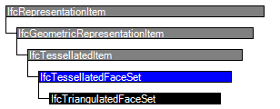

Natural language names
 | tesselliertes Element aus Flächen |
 | Tessellated Face Set |
 | Ensemble de faces tessellées |
| tesselliertes Element aus Flächen |
| Tessellated Face Set |
| Ensemble de faces tessellées |
| Item | SPF | XML | Change | Description | IFC2x3 to IFC4 |
|---|---|---|---|---|
| IfcTessellatedFaceSet | ADDED |
The IfcTessellatedFaceSet is a boundary representation topological model limited to planar faces and straight edges. It may represent an approximation of an analytical surface or solid that may be provided in addition to its tessellation as a separate shape representation. The IfcTessellatedFaceSet provides a compact data representation of an connected face set using indices into ordered lists of vertices, normals, colours, and texture maps.
NOTE The compact representation has been chosen to enable small data sets despite potentially large sets of faces, edges and vertices needed to represent tessellations of analyticals surfaces and solids, and despite large sets of colour and texture information to annotate the tessellated faces.
The IfcTessellatedFaceSet is an abstract supertype of tesselated face sets each imposing specific constraints on face generation for tessellation, such as triangulation (with or without strip and fans), or quadrilaterals.
NOTE Not all different constraints on face sets are included as specific subtypes in this release of the specification.
The following attributes apply to all subtypes:
Each face of the tessellated face set shall have:
NOTE The definition of IfcTessellatedFaceSet is based on the indexedFaceSet defined in ISO/IEC 19775-1
HISTORY New entity in IFC4.
| # | Attribute | Type | Cardinality | Description | C |
|---|---|---|---|---|---|
| 1 | Coordinates | IfcCartesianPointList3D | [1:1] | An ordered list of Cartesian points used by the coordinate index defined at the subtypes of IfcTessellatedFaceSet. | X |
| 2 | Normals | IfcParameterValue | L[1:?]L[3:3] | An ordered list of directions used by the normal index defined at the subtypes of IfcTessellatedFaceSet. It is a two-dimensional list of directions provided by three parameter values. | X |
| 3 | Closed | IfcBoolean | [0:1] | Indication whether the IfcTessellatedFaceSet is a closed shell or not. If omited no such information can be provided. | X |
| HasColours | IfcIndexedColourMap @MappedTo | S[0:1] | Reference to the indexed colour map providing the corresponding colour RGB values to the faces of the subtypes of IfcTessellatedFaceSet. | X | |
| HasTextures | IfcIndexedTextureMap @MappedTo | S[0:?] | Reference to the indexed texture map providing the corresponding texture coordinates to the vertices bounding the faces of the subtypes of IfcTessellatedFaceSet. | X |

| # | Attribute | Type | Cardinality | Description | C |
|---|---|---|---|---|---|
| IfcRepresentationItem | |||||
| LayerAssignment | IfcPresentationLayerAssignment @AssignedItems | S[0:1] | Assignment of the representation item to a single or multiple layer(s). The LayerAssignments can override a LayerAssignments of the IfcRepresentation it is used within the list of Items. | X | |
| StyledByItem | IfcStyledItem @Item | S[0:1] | Reference to the IfcStyledItem that provides presentation information to the representation, e.g. a curve style, including colour and thickness to a geometric curve. | X | |
| IfcGeometricRepresentationItem | |||||
| IfcTessellatedItem | |||||
| IfcTessellatedFaceSet | |||||
| 1 | Coordinates | IfcCartesianPointList3D | [1:1] | An ordered list of Cartesian points used by the coordinate index defined at the subtypes of IfcTessellatedFaceSet. | X |
| 2 | Normals | IfcParameterValue | L[1:?]L[3:3] | An ordered list of directions used by the normal index defined at the subtypes of IfcTessellatedFaceSet. It is a two-dimensional list of directions provided by three parameter values. | X |
| 3 | Closed | IfcBoolean | [0:1] | Indication whether the IfcTessellatedFaceSet is a closed shell or not. If omited no such information can be provided. | X |
| HasColours | IfcIndexedColourMap @MappedTo | S[0:1] | Reference to the indexed colour map providing the corresponding colour RGB values to the faces of the subtypes of IfcTessellatedFaceSet. | X | |
| HasTextures | IfcIndexedTextureMap @MappedTo | S[0:?] | Reference to the indexed texture map providing the corresponding texture coordinates to the vertices bounding the faces of the subtypes of IfcTessellatedFaceSet. | X | |
<xs:element name="IfcTessellatedFaceSet" type="ifc:IfcTessellatedFaceSet" abstract="true" substitutionGroup="ifc:IfcTessellatedItem" nillable="true"/>
<xs:complexType name="IfcTessellatedFaceSet" abstract="true">
<xs:complexContent>
<xs:extension base="ifc:IfcTessellatedItem">
<xs:sequence>
<xs:element name="Coordinates" type="ifc:IfcCartesianPointList3D" nillable="true"/>
<xs:element name="HasColours" type="ifc:IfcIndexedColourMap" nillable="true" minOccurs="0" maxOccurs="1"/>
<xs:element name="HasTextures" nillable="true" minOccurs="0">
<xs:complexType>
<xs:sequence>
<xs:element ref="ifc:IfcIndexedTextureMap" minOccurs="0" maxOccurs="unbounded"/>
</xs:sequence>
<xs:attribute ref="ifc:itemType" fixed="ifc:IfcIndexedTextureMap"/>
<xs:attribute ref="ifc:cType" fixed="set"/>
<xs:attribute ref="ifc:arraySize" use="optional"/>
</xs:complexType>
</xs:element>
</xs:sequence>
<xs:attribute name="Normals" use="optional">
<xs:simpleType>
<xs:restriction>
<xs:simpleType>
<xs:list itemType="ifc:IfcParameterValue"/>
</xs:simpleType>
<xs:minLength value="3"/>
</xs:restriction>
</xs:simpleType>
</xs:attribute>
<xs:attribute name="Closed" type="ifc:IfcBoolean" use="optional"/>
</xs:extension>
</xs:complexContent>
</xs:complexType>
ENTITY IfcTessellatedFaceSet
ABSTRACT SUPERTYPE OF(IfcTriangulatedFaceSet)
SUBTYPE OF (IfcTessellatedItem);
Coordinates : IfcCartesianPointList3D;
Normals : OPTIONAL LIST [1:?] OF LIST [3:3] OF IfcParameterValue;
Closed : OPTIONAL IfcBoolean;
INVERSE
HasColours : SET [0:1] OF IfcIndexedColourMap FOR MappedTo;
HasTextures : SET [0:?] OF IfcIndexedTextureMap FOR MappedTo;
END_ENTITY;
 EXPRESS-G diagram
EXPRESS-G diagram Link to this page
Link to this page